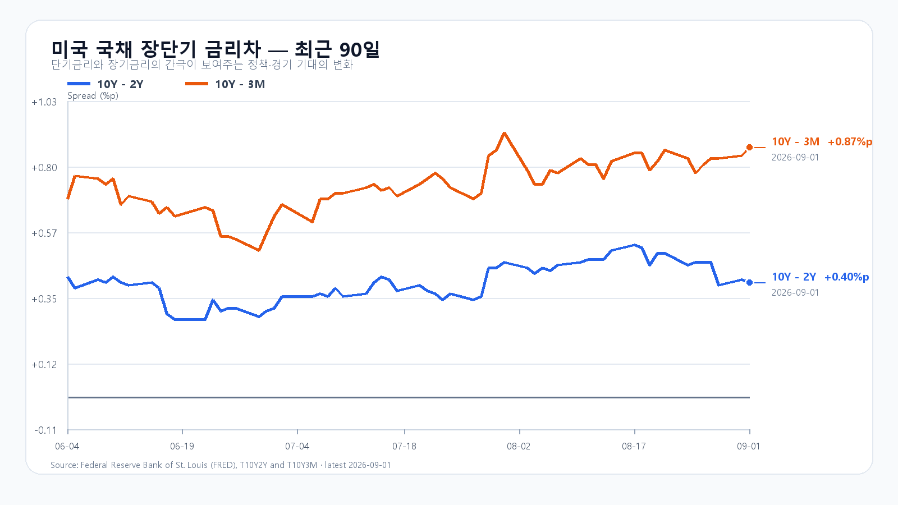

오늘의 한 문장
KOSPI 6,700을 지키는지부터 확인하고, 6,900 위는 외국인·프로그램 매수로 판단해야 합니다.
전날은 버텼지만 수급은 돌아서지 않았다
KOSPI는 9월 1일 6,784.29로 출발해 6,732.47~6,857.35를 오간 뒤 6,835.80에 마감했습니다. KODEX 레버리지는 104,090원에서 108,675원 사이를 움직여 107,725원에 끝났습니다.
지수는 기본 범위를 지켰지만 외국인과 프로그램은 매도 우위였습니다. 15시 20분 외국인 현물은 -4,966억원, 프로그램 전체는 -3,043억원이었습니다. 오늘도 가격 반등만 보고 수급 회복으로 읽어서는 안 됩니다.
| 항목 | 확정값 | 오늘 기준 |
|---|---|---|
| KOSPI | 6,835.80 · 저가 6,732.47 | 6,700 방어 · 6,900 회복 |
| KODEX 레버리지 | 107,725원 · 저가 104,090원 | 102,000원 방어 · 107,700원 회복 |
| 외국인·프로그램 | 15:20 -4,966억 · -3,043억원 | 동반 개선 여부 |
| 삼성전자·SK하이닉스 NXT | 253,000원(-3.07%) · 1,634,000원(-3.48%) | 08:13 KST 낙폭 회복 여부 |
유가·금리·반도체가 장 초반 하락 압력을 키운다
브렌트유는 94.65달러로 4.6%, WTI는 90.22달러로 5.2% 올랐습니다. 미국 2년물은 4.39%, 10년물은 4.79%, 30년물은 5.27%였습니다. 원유 수입 비용과 성장주의 할인율이 함께 올라 국내 증시에 부담이 커졌습니다.
미국 반도체도 시장보다 더 약했습니다. SOXX -2.13%, Nvidia -1.51%, AMD -2.34%, Micron -2.69%였습니다. 08시 37분 Nasdaq100 선물 -1.30%, S&P500 선물 -0.70%, 장전 NXT 대형주 3%대 하락까지 약세가 이어졌습니다.

수출과 DRAM 가격은 급락 때 버팀목이다
한국의 8월 수출은 982.5억달러로 68.7% 늘었고, 반도체 수출은 466.5억달러로 209% 증가해 월간 최고를 기록했습니다. TrendForce의 9월 1일 공개치에서도 DDR5 16Gb +0.31%, DDR4 16Gb +0.27%, DDR4 8Gb +0.40%로 주요 DRAM 현물이 함께 올랐습니다.
다만 수출 호조는 전날 오전 9시에 공개돼 9월 1일 한국장에 이미 반영됐습니다. 오늘은 실적 기대를 지키는 근거로만 봐야 합니다. 밤사이 들어온 유가·금리·반도체 충격을 지우려면 외국인과 프로그램이 실제로 매수로 돌아서야 합니다.
오늘의 시나리오
KOSPI 6,500~6,700
NXT 3%대 약세가 정규장으로 이어지고 외국인·프로그램 매도가 커집니다. 6,700을 회복하지 못하면 6,500까지 열어 둡니다.
KOSPI 6,700~6,900
장 초반 충격 뒤 반도체 수출과 DRAM 가격이 하단을 받칩니다. 6,700은 지키지만 6,900 위 추격 매수는 붙지 않습니다.
KOSPI 6,900~7,100
삼성전자와 SK하이닉스가 NXT 낙폭을 빠르게 되돌리고 외국인 현물·프로그램이 함께 순매수로 바뀝니다.
2차 지지 98,000원 · 1차 지지 102,000원 · 회복 기준 107,700원 · 저항 112,000원.
전체 장중 경로는 KOSPI 6,400~7,150으로 봅니다. 오늘 대응 점수는 공격 10 · 관망 45 · 방어 45입니다.
오늘 밤 고용과 제조업 수요를 확인한다
오후 9시 15분에는 미국 8월 ADP 민간고용, 오후 11시에는 7월 공장주문이 나옵니다. 3일 오전 3시에는 연준 베이지북, 오전 6시에는 Broadcom 실적 콘퍼런스콜이 이어집니다.
3일 밤에는 신규 실업수당과 ISM 서비스업지수, 4일 오후 9시 30분에는 미국 8월 고용보고서가 발표됩니다. 유가가 높은 만큼 고용의 강약뿐 아니라 서비스 물가와 임금 신호도 함께 봐야 합니다.